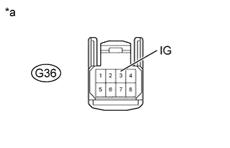
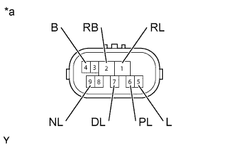
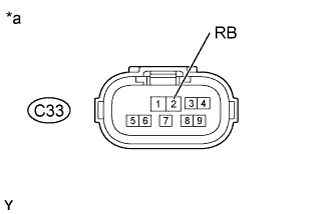
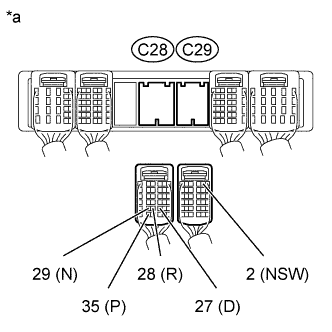
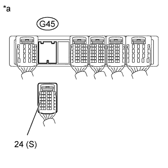

DTC P0705 Transmission Range Sensor Circuit Malfunction (PRNDL Input) |
| DTC Code | DTC Detection Condition | Trouble Area |
| P0705 | One of the following conditions is met: (A) Any 2 or more of the following signals are ON simultaneously (2-trip detection logic):
|
|
| DATA LIST |
Warm up the engine.
Turn the engine switch off.
Connect the intelligent tester to the DLC3.
Turn the engine switch on (IG).
Turn the intelligent tester on.
Enter the following menus: Powertrain / Engine and ECT / Data List.
According to the display on the tester, read the Data List.
| Tester Display | Measurement Item/Range | Normal Condition | Diagnostic Note |
| Neutral Position SW Signal | PNP switch status/ ON or OFF |
| When the shift lever position displayed on the intelligent tester differs from the actual position, the adjustment of the PNP switch or shift cable may be incorrect. |
| Shift SW Status (P Range) | PNP switch status/ ON or OFF |
| When the shift lever position displayed on the intelligent tester differs from the actual position, the adjustment of the PNP switch or shift cable may be incorrect. |
| Shift SW Status (R Range) | PNP switch status/ ON or OFF |
| When the shift lever position displayed on the intelligent tester differs from the actual position, the adjustment of the PNP switch or shift cable may be incorrect. |
| Shift SW Status (N Range) | PNP switch status/ ON or OFF |
| When the shift lever position displayed on the intelligent tester differs from the actual position, the adjustment of the PNP switch or shift cable may be incorrect. |
| Sports Shift Up SW | Sport shift up switch status/ ON or OFF |
| - |
| Sports Shift Down SW | Sport shift down switch status/ ON or OFF |
| - |
| Sports Mode Selection SW | Sport mode select switch status/ ON or OFF |
| - |
| Shift SW Status (D Range) | PNP switch status/ ON or OFF |
| When the shift lever position displayed on the intelligent tester differs from the actual position, the adjustment of the PNP switch or shift cable may be incorrect. |
| 1.INSPECT TRANSMISSION CONTROL SWITCH |
 |
Disconnect the G36 transmission control switch connector.
Measure the resistance according to the value(s) in the table below.
| Tester Connection | Condition | Specified Condition |
| 3 (IG) - 7 (S) | Shift lever in S, "+" or "-" | Below 1 Ω |
| 3 (IG) - 7 (S) | Shift lever not in S, "+" or "-" | 10 kΩ or higher |
| *a | Component without harness connected (Transmission Control Switch) |
|
| ||||
| OK | |
| 2.CHECK TRANSMISSION CONTROL SWITCH (POWER SOURCE) |
|  |
Disconnect the G36 transmission control switch connector.
Measure the voltage according to the value(s) in the table below.
| Tester Connection | Switch Condition | Specified Condition |
| G36-3 (IG) - Body ground | Engine switch on (IG) | 11 to 14 V |
| G36-3 (IG) - Body ground | Engine switch off | Below 1 V |
| *a | Front view of wire harness connector (to Transmission Control Switch) |
|
| ||||
| OK | |
| 3.INSPECT PARK/NEUTRAL POSITION SWITCH ASSEMBLY |
|  |
Disconnect the C33 park/neutral position switch connector.
Measure the resistance according to the value(s) in the table below.
| Tester Connection | Condition | Specified Condition |
| Shift lever in P | Below 1 Ω |
| 2 (RB) - 1 (RL) | Shift lever in R | Below 1 Ω |
| Shift lever in N | Below 1 Ω |
| 2 (RB) - 7 (DL) | Shift lever in D, S, "+" or "-" | Below 1 Ω |
| Shift lever not in P | 10 kΩ or higher |
| 2 (RB) - 1 (RL) | Shift lever not in R | 10 kΩ or higher |
| Shift lever not in N | 10 kΩ or higher |
| 2 (RB) - 7 (DL) | Shift lever not in D, S, "+" or "-" | 10 kΩ or higher |
| *a | Component without harness connected (Park/Neutral Position Switch) |
|
| ||||
| OK | |
| 4.CHECK PARK/NEUTRAL POSITION SWITCH ASSEMBLY (POWER SOURCE) |
|  |
Disconnect the C33 park/neutral position switch connector.
Measure the voltage according to the value(s) in the table below.
| Tester Connection | Switch Condition | Specified Condition |
| C33-2 (RB) - Body ground | Engine switch on (IG) | 11 to 14 V |
| C33-2 (RB) - Body ground | Engine switch off | Below 1 V |
| *a | Front view of wire harness connector (to Park/Neutral Position Switch) |
|
| ||||
| OK | |
| 5.CHECK HARNESS AND CONNECTOR (PARK/NEUTRAL POSITION SWITCH - ECM) |
|  |
Disconnect the C28 and C29 ECM connectors.
Measure the voltage according to the value(s) in the table below.
| Tester Connection | Condition | Specified Condition |
| C28-35 (P) - Body ground |
| 11 to 14 V |
| C28-28 (R) - Body ground |
| 11 to 14 V* |
| C28-29 (N) - Body ground |
| 11 to 14 V |
| C28-27 (D) - Body ground |
| 11 to 14 V |
| C29-2 (NSW) - Body ground |
| 11 to 14 V |
| C28-35 (P) - Body ground |
| Below 1 V |
| C28-28 (R) - Body ground |
| Below 1 V |
| C28-29 (N) - Body ground |
| Below 1 V |
| C28-27 (D) - Body ground |
| Below 1 V |
| C29-2 (NSW) - Body ground |
| Below 1 V |
| *a | Front view of wire harness connector (to ECM) |
|
| ||||
| OK | |
| 6.CHECK HARNESS AND CONNECTOR (TRANSMISSION CONTROL SWITCH - ECM) |
|  |
Disconnect the G45 ECM connector.
Turn the engine switch on (IG).
Measure the voltage according to the value(s) in the table below.
| Tester Connection | Condition | Specified Condition |
| G45-24 (S) - Body ground | Shift lever in S, "+" or "-" | 11 to 14 V |
| G45-24 (S) - Body ground | Shift lever not in S, "+" or "-" | Below 1 V |
| *a | Front view of wire harness connector (to ECM) |
|
| ||||
| OK | ||
| ||